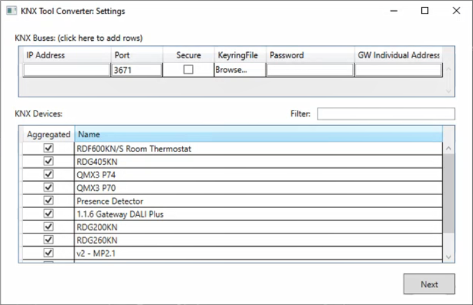

Start the KNX Tool Converter
- In the AdditionalSW/KNX_ConfGeneratorTool folder of the software distribution available locally or on the installation DVD, double-click ToolKNX.exe.
- The KNX Tool Converter displays.
- Click Browse.
- In the Browse for KNXProj file dialog box, locate and select the KNXProj file to convert, and click Open.
- The name of the file to convert displays in the relevant field.
- If the KNX project file is protected by password, enter the password, and click Decrypt.
- If a relevant converter version is found, it displays underneath the name of the file to convert. Otherwise, you must select an appropriate compatible version from the drop-down list.
NOTE: The available converters are contained in the Converters folder located in the same folder as the tool executable file. - A Merge configuration file check box is displayed if a previous version of the JSON configuration file is also available.
- Select this option if you want to start from the previous import settings, using that as a basis for your further changes.
- Deselect this option if you want to discard the previous import settings and start a new configuration from scratch.
- Click Start.
- The KNX Tool Converter: Settings window displays.
